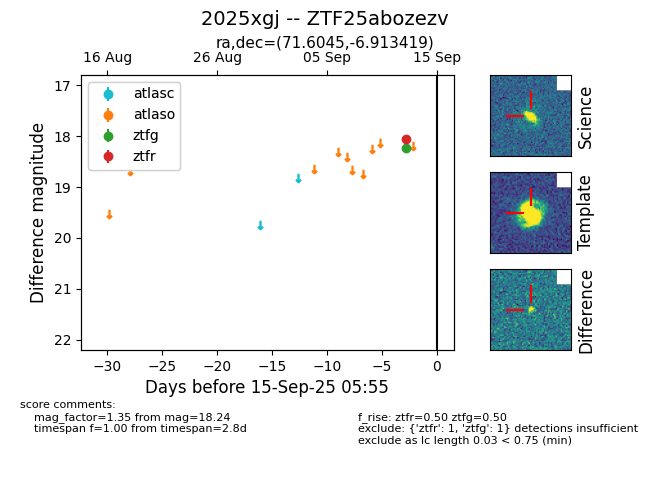

FINK: ZTF25abozezv
Lasair: ZTF25abozezv
ALeRCE: ZTF25abozezv
TNS: 2025xgj
YSE: 2025xgj
ZTF25abozezv (ztf,fink)
2025xgj (tns,yse)
equatorial (ra, dec) = (71.6045,-6.91342)
galactic (l, b) = (204.3721,-30.88369)

last atlaso=17.91, ztfg=17.86, ztfr=17.75
3 atlaso, 3 ztfg, 4 ztfr detections